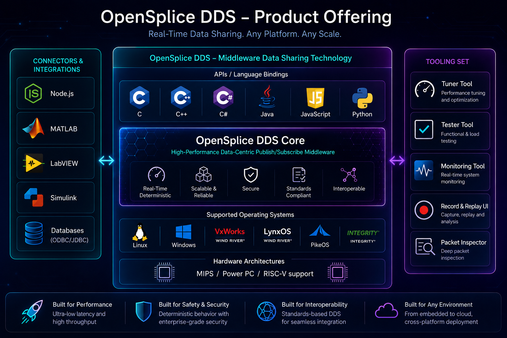
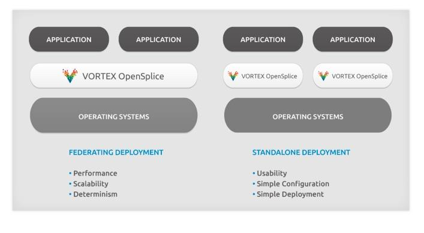
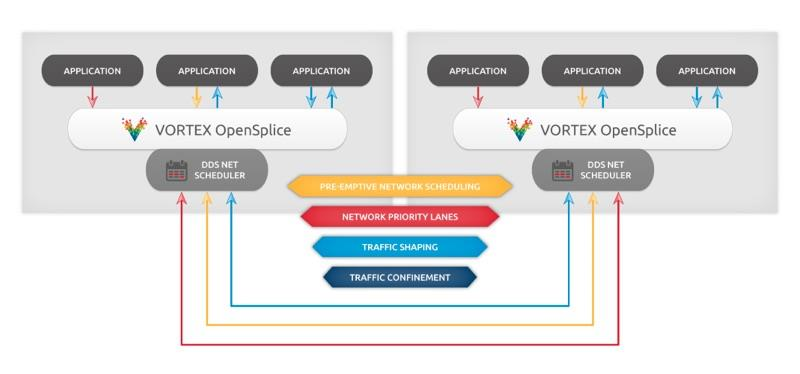
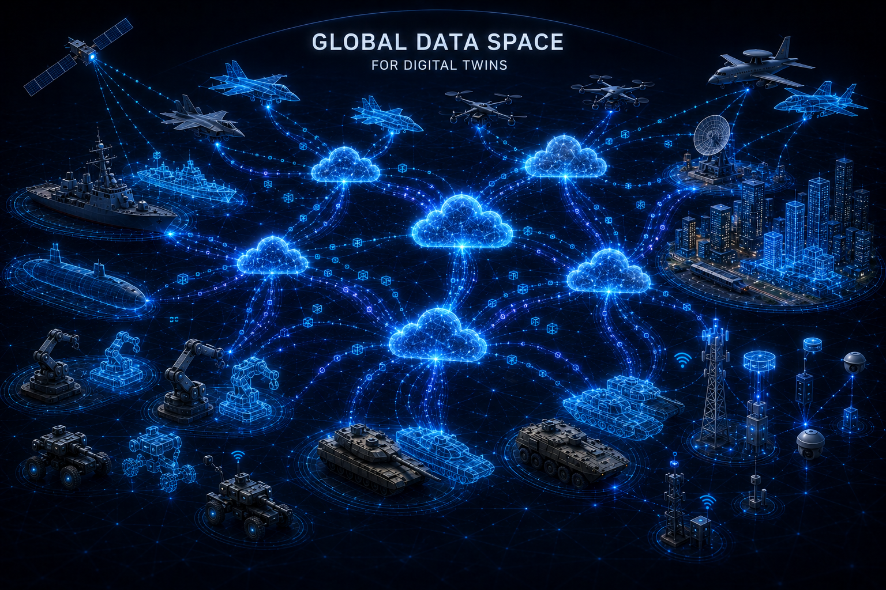
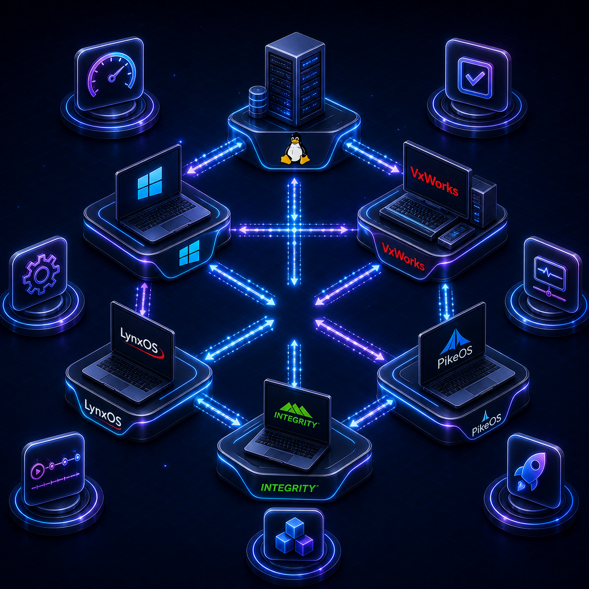
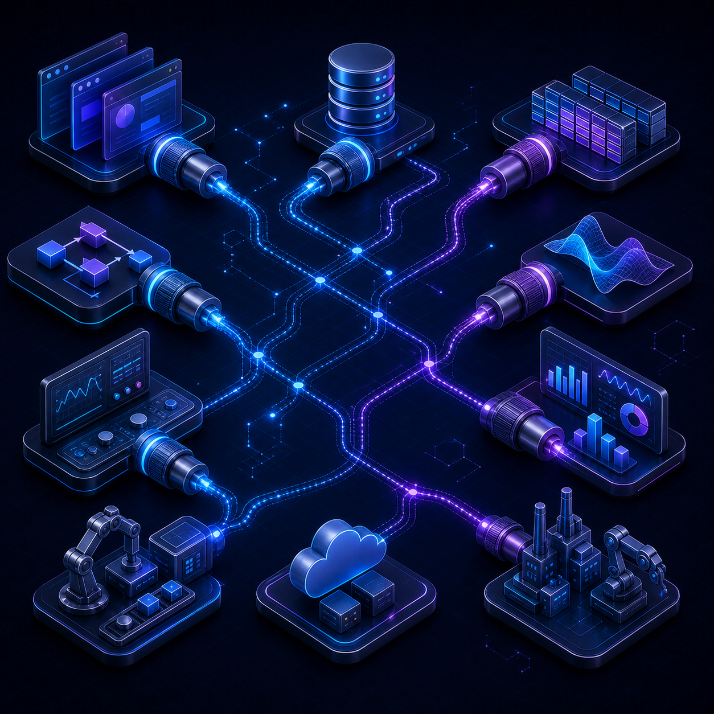
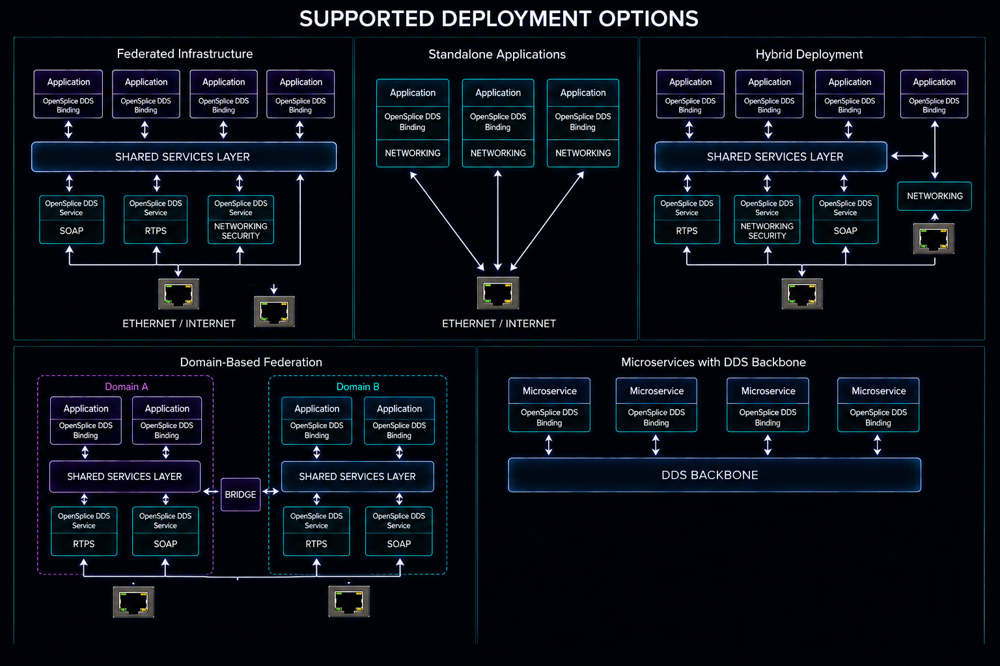
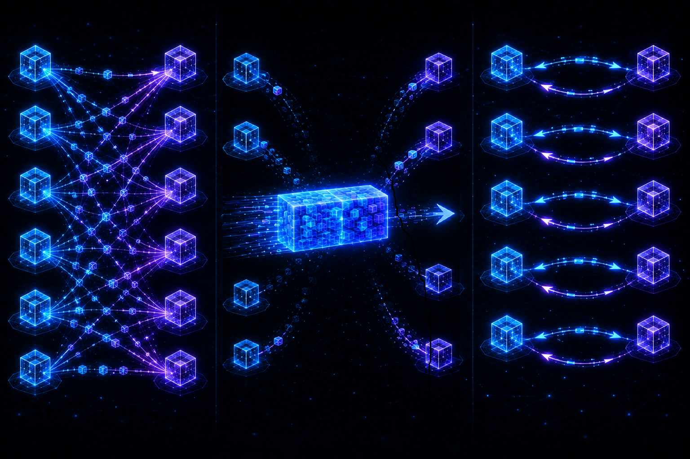

The Reference OMG Data-centric middleware for distributed, real-time,
fault-tolerant and secure systems.
Opensplice DDS is ZettaScale's DDS implementation for enterprise platforms,
embedded devices, and real-time operating environments. This local page
organizes product information into a concise technical brief.
Overview
ZettaScale OpenSplice overview
ZettaScale OpenSplice enables data to be shared and integrated across
a wide spectrum of operating systems and platforms. It provides a full
implementation of both the OMG DDS latest rev1.4 (DCPS profiles) and
the OMG-DDSI / RTPS v2.4 interoperable wire-protocol standards. It is
targeted for use with server-class (desktops, racks etc.) platforms as
well as more specialized real-time embedded environments and operating
systems (e.g. single board computer running VxWorks). Opensplice DDS
is fully interoperable with Cyclone DDS, Zetta DDS and any OMG
compliant implementation.

Architecture
In wide distributed systems the Network and the CPUs (Central Processing
Units) are considered the most critical resources. As such, they are
deemed the main bottleneck of the overall system performance.
In Real-time systems, CPUs orchestration and scheduling are controlled by
the Operation System scheduler who has very limited capabilities to
control the Network, neither the Computer's Network Interface Cards nor
the Network Routers in use. This lack of network scheduling is problematic
when you need to prioritize the data flows.
To take advantage of multicore computing architectures and to address the
lack of network scheduling that can manage the data at the DDS level based
on its Urgency and Importance, it is crucial to come up with a DDS
architecture that can Federate all the applications running on the same
computing unit and orchestrate their data dissemination based on their
Quality of Services (QoS).
Associating QoS to data enables the DDS infrastructure to pre-empt the
low-priority traffic in favor of the one with the highest-priority and the
most urgent. On the other hand, when there is little processing to
factorize and federate, the classical way to implement DDS as a set of
libraries you link your application code within a Single Process mode can
be good enough.
The Single process architecture mode is typically recommended when only a
singleton application is running on a given computer.
The Opensplice DDS architecture can operate and get deployed in two,
fully interoperable, modes:
In a Federated mode, for complex architectures where each computer hosts several DDS aware applications.
In a library based Standalone, single process mode, when, typically, only one application is using DDS and there is nothing to federate or orchestrate.

Opensplice DDS Deployment Modes
Federated Architecture with Shared Memory and Network Scheduling
To rationalize the memory resources when several DDS aware applications
are running on the same node, Opensplice DDS architecture can support
shared memory to minimize the need to keep the data in the address space
of each application. The shared memory segment is common to all the local
DDS applications; it can be seen as an in-memory real-time database that
can be queried using SQL (Structured Query Language). The Federated
architecture with shared memory option has also the advantage to have an
ultra-low latency inter-core communication.
When configuring Opensplice DDS for the Federated deployment
architecture, data is physically stored only once on a machine's
federation. A smart administration still provides each subscriber within
the federation with his own private 'view' on the data space. This allows
a reader's data cache to be perceived as an individual 'database' that can
be content-filtered, queried, etc.
Opensplice DDS also has a unique architecture in the market that offers
a DDS Network Scheduler in order to:
Organize and Classify the data based on its Importance and Urgency, and creates network channels for each urgent and important data stream class. These channels are called to priority lanes.
Pre-empt the less urgent data streams and allocate the network bandwidth to the highest priority, most up-to-date, and most urgent data stream, as it is defined in the QoS attached to each data stream.
Perform traffic shaping to adapt the amount of data to be sent on the network with the network bandwidth available.
Confine the data to the subnetworks where it is actually used when the system is logically and physically partitioned.

Opensplice DDS Network Scheduler and its Network priority Lanes
The DDS Network Scheduler allows you to have maximal nodal scalability. It
can be configured to appear as the unique proxy of all the local
applications on the network. The system scalability is, therefore,
depending on the number of machines rather than being correlated to the
number of DDS participant applications, as it is the case with the
classical Single Process mode.
The Network Scheduler; creates as many network priority lanes as needed
and helps you to enforce message priority even on non-priority-preserving
transports, such as the TCP/IP or UDP/IP.
The DDS Global data space as well as the applications that produce them
can be organized in logical groups known as DDS partitions. The
Non-Opensplice DDS implementations use the same multicast address to spread
the data everywhere and rely on the DDSi protocol stack to discard the
unwanted data on a given node.
For instance, if your system is organized in four geographical partitions,
North, South, East, and West, and you are building an air
surveillance-like system, each region needs to have a sub-system to detect
intrusions and need to react locally and immediately.
When a Radar of given geographical region detects and publishes the
position of a given track in the air, you don't want that data to get
spread over the entire network and waste you critical network bandwidth
and resources and consume unnecessarily CPUs time when the subscribing
application that is responding to the threat is in the same region as the
publisher.
Opensplice DDS Network Scheduler allows you to associate different
multicast and unicast addresses to the same DDS logical partition to
confine, physically, the traffic to the subnetwork where there is real
interest in the produced data.
The federated architecture with shared memory results in an extremely low
footprint, excellent scalability, and optimal performance when compared to
other DDS implementations where each reader and writer are seen as a
'communication-endpoints' each one with their own storage.
Simple Standalone/Single Process Architecture
This deployment allows the DDS applications and Opensplice DDS
middleware libraries to be simply linked together into a single process.
One of the advantages of this deployment option is that; there is no need
to pre-configure a shared memory segment as dynamic heap memory is
utilized by the process. Along with the 'zero-configuration', there is no
need to start up the federation's services as all functionality is bundled
within the application process. The middleware, the data and the
application lifecycles are tied together.
This kind of simple deployment can suffice when you have one DDS aware
application per machine and when there is nothing to federate. It can be
particularly useful for embedded platforms.
Data Centricity and QoSs
Opensplice DDS sets itself apart from other types of messaging or data
sharing technology through advanced features and non-functional
properties:
Data Centric - enabling applications to be designed around an extensible and evolvable data model, promoting end-to-end type safety and time and space efficiency.
Real-time - delivering the right information to the right place at the right time, all the time.
Dependable - ensuring availability, reliability, safety and integrity in spite of hardware and software failures.
Secure - maintaining confidentiality, integrity and authenticity of exchanged data.
Fault-tolerance - Opensplice is itself a fault-tolerant middleware and helps build fault-tolerant systems that can self-heal.

Tooling & OS Portability
Increased productivity through powerful tools such as:
Wide range of Enterprise and Embedded platform support including:
Linux
Windows
VxWorks
PikeOS, and many others on-demand.

Opensplice Connectors
Extra Connectivity, enabling data to be shared and integrated across a
wide spectrum of technologies, including:
web technologies,
databases and
simulation and modulization environments.

Unique Architectural Patterns for Scalability and Low-Jitters
Scalable Durability Service supports disconnections and automatic
alignment policies to guarantee the eventually consistent model of all
non-volatile data sets within the DDS domain.
Better performance, determinism and scalability, through unique
architectural patterns such as:
the network scheduling,
the shared memory,
the traffic shaping,
the data partitioning, and
the priority lanes patterns.

Extra Communication Paradigms
RMI (request-reply Remote Method Invocation),
Stream APIs, for batched data samples management,
N Pub - M Sub, one-to-one or many-to-many efficient communication.

Professional Service Offering
On-site or remote consulting,
On-site or remote training,
Technical support with different levels of committed Service Level Agreements,
Frozen support of your preferred Opensplice OS/HW version,